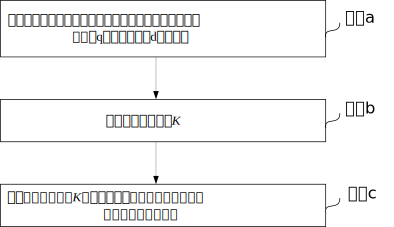

异步电机转差修正方法
创建于2021-3-31
该项目完成于2016-11，原创
该项目完成于2016-11，原创
矢量控制是异步电机常用的控制方法，该方法通过坐标变换将三相异步电机等效成直流电机来控制，可以达到与直流电机相媲美的调速效果。矢量控制分为直接矢量控制和间接矢量控制两种，一般带有编码器时，常采用间接矢量控制。
采用间接矢量控制时，需要设置电机的转差，但在实际应用中，有时很难得到准确的转差值。如果电机转差设置不准确，就会导致q轴电流与转矩不成正比，可能会导致控制性能下降。
为解决这个问题，特设计了一种异步电机转差修正方法，这种方法在不考虑磁链饱和的情况下，可以根据电机运行的状态计算出准确的转差值。

申请专利一项：异步电机的转差修正方法及其装置，已授权，ZL201910245834.1。